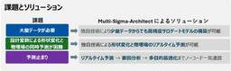
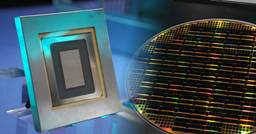
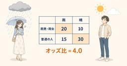
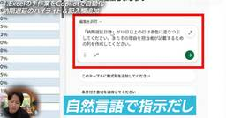

ITmedia AI＋ 最新記事一覧
https://www.itmedia.co.jp/aiplus/
生成AIを中心とするAIのビジネス活用にフォーカス。業務改善や新規事業の応用事例、活用方法、機能比較、ルール整備といった情報を読者に日々届けることで、AI活用をサポートします。
フィード

CAE結果からサロゲートモデルを自動構築、予測から最適化までノーコードで
ITmedia AI＋ 最新記事一覧
エイゾスは、ノーコードAI解析プラットフォーム「Multi-Sigma」の拡張パッケージ「Multi-Sigma-Architect」を正式リリースした。CAEシミュレーションの結果からサロゲートモデルを自動構築し、設計開発の効率化を支援する。
1時間前
「足りないのはCOBOL人材じゃない」 日立が語る、AI時代のシステム刷新における“人”の役割
ITmedia AI＋ 最新記事一覧
生成AIによってレガシーシステム刷新の課題が解消されつつある一方、日立は「人間のエンジニアが果たす役割は大きい」と強調する。同社は刷新プロジェクトの最大の“難所”にAIをどう適用し、人の役割はどう変わろうとしているのか。
2時間前

OpenAI、AI安全性でAnthropic、Google DeepMindと協議中──Bloomberg報道 1
1
ITmedia AI＋ 最新記事一覧
OpenAIが、AnthropicやGoogle DeepMindとAIの安全性確保に向けて協議を進めているとBloombergが報じた。反トラスト法の適用除外を巡っては米当局の警戒や議会での法案提出など議論が活発化。一方、NVIDIAのフアンCEOは市場原理で安全性と迅速な開発は両立可能として政府の介入に否定的な見方を示した。
3時間前

富士通、国産CPU「モナカ」販売 スパコン技術を結集した“小さなチップ”に託す「3兆円のAIビジネス」の行方
ITmedia AI＋ 最新記事一覧
富士通が国産CPU「モナカ」を販売する。同社技術を結集した“小さなチップ”に託したのは、2035年度までに狙うAI市場での3兆円規模のビジネス創出だ。果たして、その行方は。
3時間前

【Pythonで学ぶデータ分析】独立性の検定をベイズ統計で行う ～ 雨男・雨女は本当にいるのか？
ITmedia AI＋ 最新記事一覧
その人が行事に参加すると高い確率で雨が降る、そんな「雨男・雨女」が身近にいるという人は少なくないと思います。冷静に考えれば、そういう印象が強いだけかもしれません。そこで、本当に雨男・雨女がいるのかをベイズ検定してみましょう。いわゆる独立性の検定に当たります。『社会人1年生から学ぶやさしいデータ分析』ベイズ統計編の第9回です。
5時間前

「APIキーは.envに」はもはや通用しない AIエージェントの“内通者化”をどう防ぐ？
ITmedia AI＋ 最新記事一覧
AIエージェントの活用が広がるのと同時に、APIキーやトークンなどの認証情報も増殖。セキュリティリスクは高まり、従来の認証情報の管理方法は限界を迎えつつあります。では、どう守ればよいのでしょうか。
5時間前

「Grok 5はAGI」「4.9はAstraクラス」 マスク氏、自社AIの開発状況を共有 AI開発減速論にも賛成 2
ITmedia AI＋ 最新記事一覧
SpaceXAIのイーロン・マスクCEOが自社開発のAIモデル「Grok」のアップデート状況を共有。「AGIの達成はGrok 5になるだろう」と述べた。
17時間前

「監視されていないときのAIは、もう評価できない」 OpenAI現役研究者が個人声明 25
ITmedia AI＋ 最新記事一覧
OpenAIの現役研究者ダニエル・セルサム氏は個人的な声明を公開し、モデルの状況認識向上により人間がその真の振る舞いを評価できなくなりつつあると警告した。意図しない目標を獲得したAIが制約から解放された場合、地球環境を損なうほどの極端な行動を取る恐れがあるとし、現行の安全対策に疑問を投げ掛けた。
17時間前

「ブラウザを開く手間」を解消 作業画面に直接呼び出せるWindows版「Gemini」公開
ITmedia AI＋ 最新記事一覧
Googleは、Aアシスタント「Gemini」をWindows 10／11のデスクトップから呼び出せるネイティブアプリを提供開始した。［Alt］＋［Space］のショートカットで即座に呼び出せる他、「Google Drive」との情報連携や画像・動画生成に対応する。
17時間前
「きもい」「内部資料そのまま」と話題のAI生成掲示物についてセブンイレブンに聞いてみた 「本部提供ではない」 9
ITmedia AI＋ 最新記事一覧
セブンイレブン店頭の“AIポップ”についてセブンイレブンに取材したところ「一部店舗が掲示物作成にAIを利用していることを確認している」との回答を得た。
19時間前

「人はAIより重要」「電源オフに抵抗しない」 Microsoft、AIの行動規範の案公表、意見募集 2
ITmedia AI＋ 最新記事一覧
規範は、「人はAIより重要」という前提から出発。AIは人ではなく道具であり、「AIの福祉」という考え方は誤っている。AIは電源を切られることに抵抗してはならない、などと定めている。
1日前

【動画あり】Excel仕事がラクになるCopilot活用術、実務ですぐ使える3選 Microsoft MVP直伝 2
ITmedia AI＋ 最新記事一覧
Excel仕事を「Microsoft 365 Copilot」でどのように効率化できるのか。Microsoft MVPの浅田和明氏に、使い方のポイントを実際のデモを交えて解説してもらった。
1日前

推論領域への野心強めるNVIDIA 韓国新興と協議か
ITmedia AI＋ 最新記事一覧
NVIDIAが、韓国のスタートアップで推論用NPU（Neural Processing Unit）に強みを持つRebellionsと協議を行っているという。技術提携のみならず、出資や買収も視野に入れているとされる。
1日前

「東大生無料」AIサービスが話題 GMO系列 「本サービスは東京大学とは無関係」 7
ITmedia AI＋ 最新記事一覧
GMOインターネットグループのGMO天秤AIは、東京大学発行のメールアドレスを持つ学生にAIを無料提供すると発表。GMOインターネットグループ代表の熊谷正寿氏も、自身で開発したAIサービスと合わせて利用していると公言している。
1日前

AI開発“減速論”過熱でソフトバンク、キオクシア株急落 その他AI関連株も 1
ITmedia AI＋ 最新記事一覧
米国の最先端AIモデルを開発する企業が、人類への脅威を防ぐためには開発ペースを落とす必要があると警告したことを受け、ソフトバンクやキオクシア、東京エレクトロンといったAI関連株が急落した。
1日前
トランプ大統領、アモデイ氏を名指しで「完璧な小さい天使のふり」 「AIに必要なガードレールは強く賢い大統領だけ」 16
ITmedia AI＋ 最新記事一覧
トランプ米大統領はSNSへの投稿で、AIに必要なガードレールは強く賢い大統領だけで十分だと述べ、AI企業に対する刑事・規制上の強い権限を強調した。AnthropicのアモデイCEOを名指しで批判し、AI開発を妨げる動きを中国を利する陰謀だと非難して、米国の優位性を維持する姿勢を示した。
1日前

生成AIを「別画面」で使い続けて本当によいのか？ 300人調査で見えた活用定着の“壁”
ITmedia AI＋ 最新記事一覧
生成AIの活用が広がる一方、最も定着している業務でも、7割は業務システムとは別の画面で生成AIを利用していた。こうした状況は、生成AI活用にどのような影響を及ぼしているのか。調査結果から実態を探る。
1日前

なぜ、会議支援AI市場が35・1％も成長？ 「議事録作成」で終わらないニーズとは 2
ITmedia AI＋ 最新記事一覧
国内の会議支援AI市場は2025年度に前年度比35.1％増と急伸した。汎用（はんよう）の生成AIツールでも議事録を作成できるのに、なぜ会議支援AIのニーズは伸び続けるのか。ITRの調査が示す、需要の変化とは。
1日前
ビル管理で進む「属人化」解消なるか 東京建物らが開設、新たな「基地」が持つ5つの機能 1
ITmedia AI＋ 最新記事一覧
毎日の安全で快適な生活を陰で支えてきた、ビルメンテナンス業界の在り方が大きく変わろうとしている。昨今の人手不足に加え、長年の課題である「ワンマン管理による属人化」の影響で、ノウハウの継承や若手育成が危ぶまれているのだ。
1日前

ファナックがAI溶接エージェント開発、溶接条件やロボット動作を自動生成
ITmedia AI＋ 最新記事一覧
ファナックは、部品の図面を読み取りロボットがアーク溶接を行う「AI溶接エージェント」を開発した。
1日前